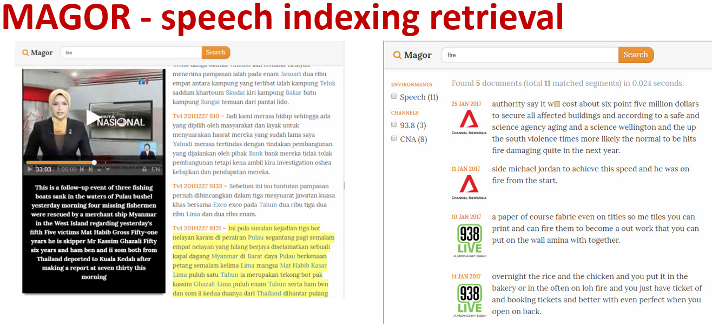
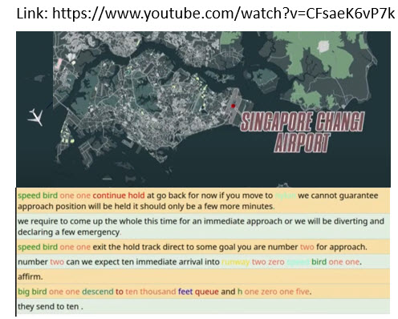

Section 2.1 Speech and Language laboratory
¶The speech and language research group in SCSE (now CCDS of NTU) was founded in 2007 by Chng Eng Siong and Prof Li Haizhou (now in CUHK-Shenzen, China). The group is now situated within HESL Lab - N4-B2b-05 in SCSE. We also founded the AISG Speech Lab funded by NRF since 2018~current.
Subsection 2.1.1 AISG Speech Lab Startup: Abax.AI
We formed the startup Abax.AI from 100E project of AISG in 2022. Details of how this startup was formed can be found here. Abax.AI offers speech transcription of code-mixing Singapore English+Manadrin+Malay solution as SDK and on-premise support. This solution is now deployed in the following agencies/companies
- SCDF - project began 2018~ deployed live 2023-> current). Some news:
StraitsTimes-2018andDemo to Minister Shanmugam-2019 - NKF - project began 2025 ~ live to current). NKF uses speech technology for case recording and analytics.
news in Linkedin-2026, we are Abax.AI (the company providing the speech recognition technology) - Medical triaging (2024) POC.
StraitsTimes
Subsection 2.1.2 Research Focus
Our research interest is primarily speech and language processing, classifications using ML:
ASR and LLM- Speech LLM research with AISG SeaLion team
Speech SeaLionand StepFun teamStep Audio 2 - Tranfer Learning: from large trained LLM model for under-resourced languages (Indonesian-English, Malay-English)
- Using LLM to improve ASR by generative error correction: see
Hyporadise - Robust Large vocabulary continuous speech recognition: joint end-to-end ASR with speech enhancement module, wave2vec2, speaker extraction
- Speech enhancement: speaker extraction, denoising, feature enhancement, overlapping speech extraction
- Speech LLM research with AISG SeaLion team
Classification- Noisy Audio event and scene classifications, Audio captioning
DCase - Speaker identification and speaker diarization: diarization, VAD, and speaker extraction issues, see
Microsoft diarization approach - Deep Fake Detection (and generation)
Link
- Noisy Audio event and scene classifications, Audio captioning
Towards Speech Understanding- some aspects of NLP such as topic detection, name entity recognition, text normalization. See a demo of our ASR for ATC speech with NER highlighting.ATC with NER
Examples of relevant papers to the research area include: sequence to sequence model which has been widely studied in machine translation. The problems we are keen on include
- Code switch end to end and Adaptation -> how to improve the model in certain target environment (speaker, noise, type of dialogues), etc.
Code-switch End-to-end - Classification-> what type of sound is this?
Audio Scene and Event Analysis - Speaker id: who spoke it:
speaker idunderoverlapping conditionandwhen (Diarization). - Speech Enhancement -
speaker extractionandderevberation.
Subsection 2.1.3 Demos
Some of our previous works:
- Youtube recordings: Our code-switch speech recognition in action:
- Source separation - Separating Hillary Clinton and Trump voice from Youtube recording, from Chenglin's
Demo slide(Oct 2018) - Speech indexing using our MAGOR system (Code-switch English/Mandarin and Malay system)

- See a demo of our ASR for ATC speech with NER highlighting.
ATC with NER
Subsection 2.1.4 Our recent demos using our speech engine
2020 FYPs demo:
Subsection 2.1.5 Some of our recent works in git
- PhD Student Hou Nana's work in NTU (2018~2021), single channel speech enhancement,
github - PhD Student Xu Chenglin's work in NTU (2015~2020), single channel speech separation/extration,
github - Intern GeMeng's work (intern from Tianjin 2020~2021), tutorial speech separation,
github - Intern Shangeths work (intern from BITS) (2020 Aug- 2021 June), Accent, Age, Height classification
Pdf link - MSAI student Samuel Samsudin (2020~2021), emotion detection,
github depository,kaggle iEmoCap - Language Identification by EEE's PhD student Liu Hexin (2021)
github link - Intern Shashank Shirol's work (2020 Jan-June), using GAN to create noisy speech,
github depository